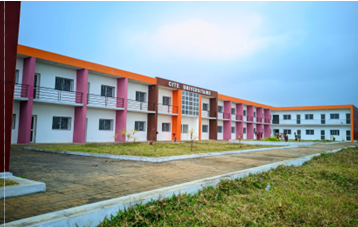
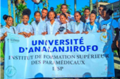
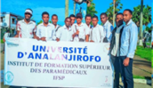
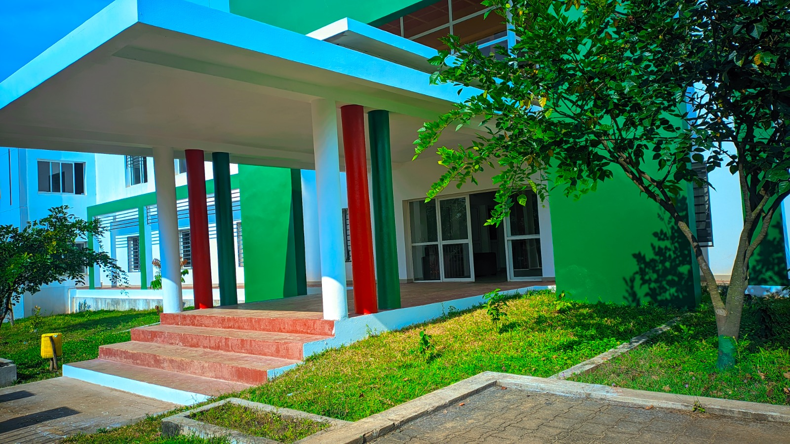

01
UNIVERSITé
D’ANALANJIROFO
INSTITUT DE FORMATION SUPERIEURE DE PARAMÉDICALE (IFSP)
Lieu d’implantation
- District : Fénérive-Est
- Commune Urbaine de Fénérive-Est
- Fokontany : SAHORANA
02
APERÇU DE L’UNIVERSITÉ
- Décret n° 2019-2020 : Portant création des Universités de Menabe, de l’Itasy, du Vakinakaratra et d’Analanjirofo
- Application du système LMD : (Licence - Master - Doctorat)
- Grade : Licence et Master
FORMATION À L’UNIVERSITÉ
- Objectifs de la formation: Produire des ressources humaines directement opérationnelles et compétentes
- Vocation des sortants : Auto emploi, Recherches
ÉTUDE
- Science de la Santé
- Mention : PARAMEDICAUX
- Parcours : Infirmier( ère) et Sage Femme
- Niveau : Licence
DURÉE DE LA FORMATION
- 3 années académiques en présentielle
- Cours théoriques L1 jusqu’à L3
- Stages pratiques en Laboratoire de Développement de Connaissance de L1 jusqu’à L3
- Stages hospitalières L1 : stage d’appréhension
- Stage hospitalière en 5 niveau de L1 à L3
- Stage rurale L2 et L3
ADMISSION
- 2 Niveaux :
- Pré-sélection : Sélection de dossier en L1
- Sélection Définitive par Admission au concours de passage en L2
- Choix de parcours : dès sélection de dossier
03
APERÇU DE L’UNIVERSITÉ
- Titulaire de Baccalauréat de l’Enseignement Générale
- Série : A2-C-S-D
- Nationalité : Malagasy ou Etrangère
- Agée de moins de 30 ans
- Résident à Madagascar ou à l’Etranger
DIPLÔME
- Licence en Science Paramédicale : Infirmier (ère) diplômé d’état
- Licence en Science Maïeutique : Sage-femme diplômée d’état
ENSEIGNANTS
- Cadres Paramédicaux
- Paramédicaux Chercheurs
- Médecins Généralistes
- Médecins Spécialistes
- Maîtres de Conférences
- Professeurs Agrégés
- Chefs de projets reconnus en Santé Publique
PLAN DE CARRIERE
- Masters en Science de la Santé
- Masters en Science de l’Éducation
- Doctorat en Science de la Santé
- Doctorat en Science de l’Éducation
- Infirmier Clinicien
- Sage-Femme Accoucheuse
- Ouverture d’un Cabinet de Soin
- Ouverture d’un Cabinet d’Accouchement
LIEU D’EXERCICE POST FORMATION
- National : Fonctionnaire, Clinique, Cabinet, Mutuel de Santé…
- International : ONG, OMS, PAM, …
- Pays Francophones : Canada, France, la Réunion, Maurice …
- Pays Anglophones : Etats Unis, Kenya, Afrique du Sud, Cameroun, Australie…
04
UNIVERSITÉ D’ANALANJIROFO
ITENDRO FÉNÉRIVE-EST
BP: 60
CONTACT du Service scolarité:
034 93 595 10
034 97 252 55
034 10 924 81

CHOISISSEZ–BIEN VOTRE MENTION ET VOTRE PARCOURS

05
INSTITUT DE FORMATION SUPÉRIEURE DE PARAMÉDICALE
- MENTION: Science paramédicale
- PARCOURS: Infirmier
- PARCOURS: Sage-femme
DIPLÔMES:
- Licence => 03 ans
- Master => 05 ans
ORGANISATION PÉDAGOGIQUE
| Répartition des enseignements | |
| Enseignements théoriques (ET) | 20% |
| Enseignements Dirigés (ED) | 20% |
| Enseignements Pratiques (EP) | 20% |
| Travail Personnel Encadré (TPE) | 20% |
| Travail Personnel Non Encadré (TPNE) | 20% |
ADMISSION EN PREMIèRE ANNéE DE LICENCE:
- Sélection des dossiers pour les Instituts: DEG, LETTRES, PARAMEDICAL et TOURISME (Toute série)


06
VIE DES ÉTUDIANTS
- Bourses d’études selon les critères de l’Université
- Vie communautaire à Fénérive-Est
- Activités socio-culturelles et sportives
AUTRES PRESTATIONS
- Formations modulaire ou thématique 04 fois par an
- Formation à la carte (à la demande)
- Agriculture
- Élevage
- Compostage
- Huiles essentielles
Autres
- Prestations de services
- Études de faisabilité technico économique / Projet de DR
- Encadrement technique
- Recherche - Action thématique
- Élaboration des projets d’Établissements / Institutionnels
PERSPECTIVE DU STATUT DE L’UNIVERSITÉ
UNIVERSITÉ INDÉPENDANTE à PART ENTIÈRE DÉNOMMÉE UNIVERSITÉ D’ANALANJIROFO
